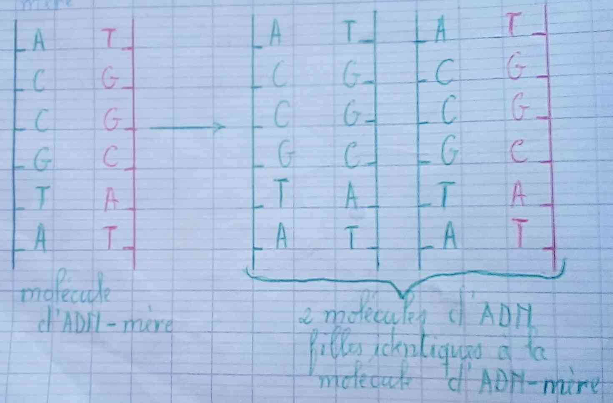
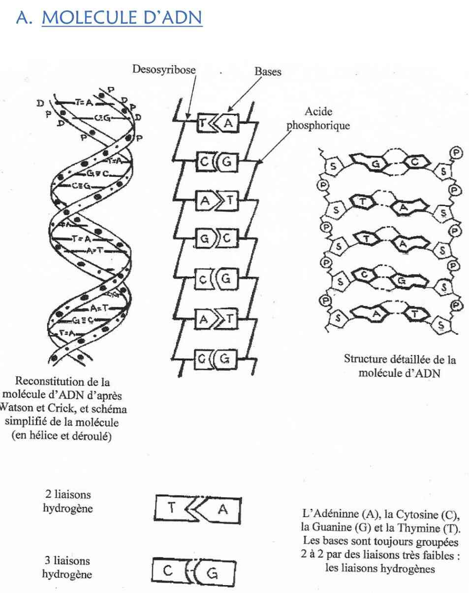
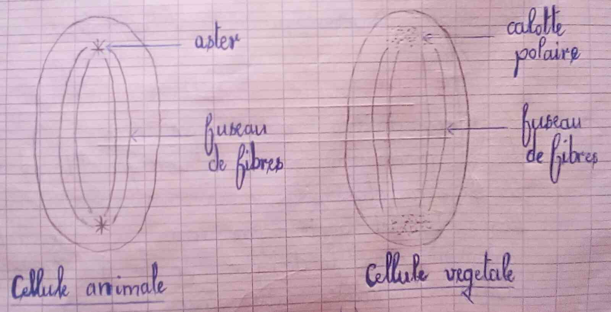
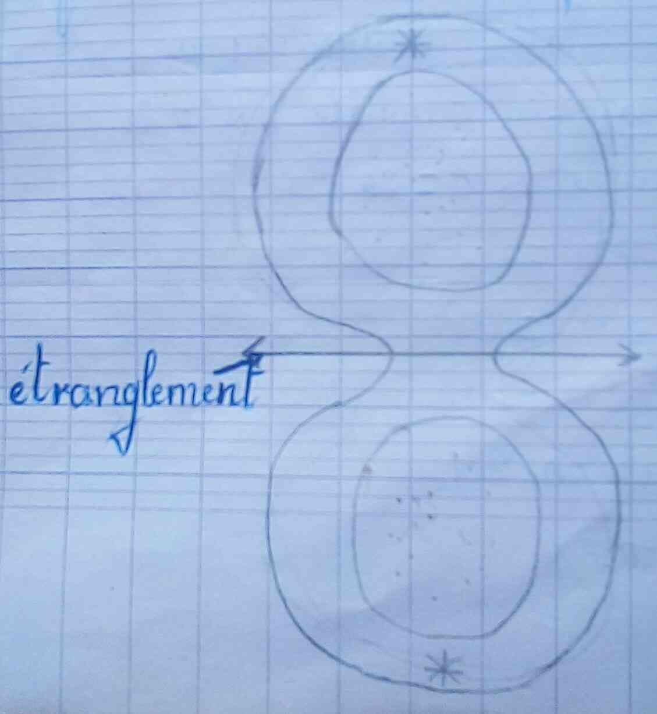
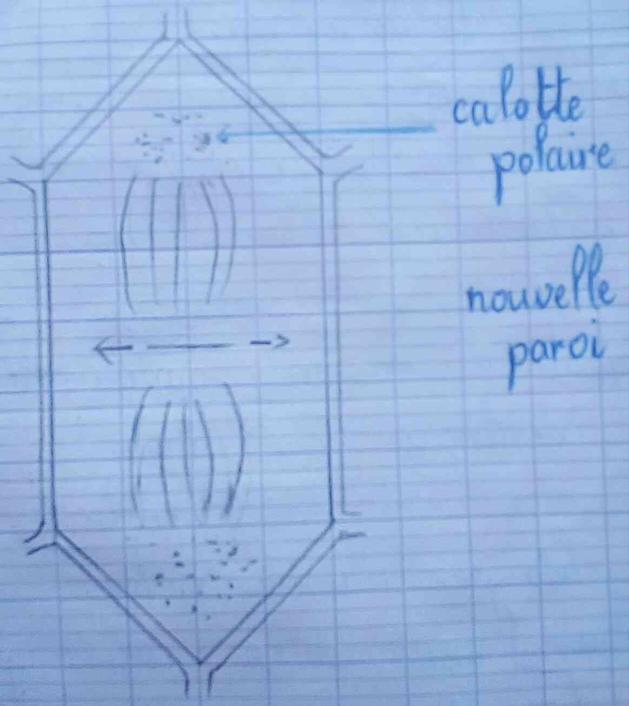
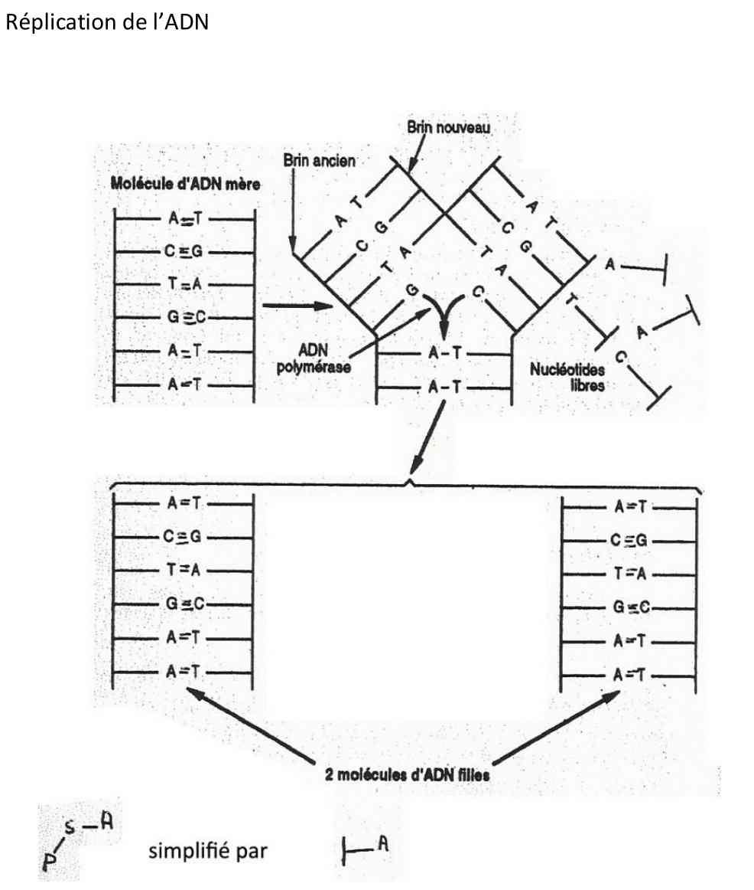
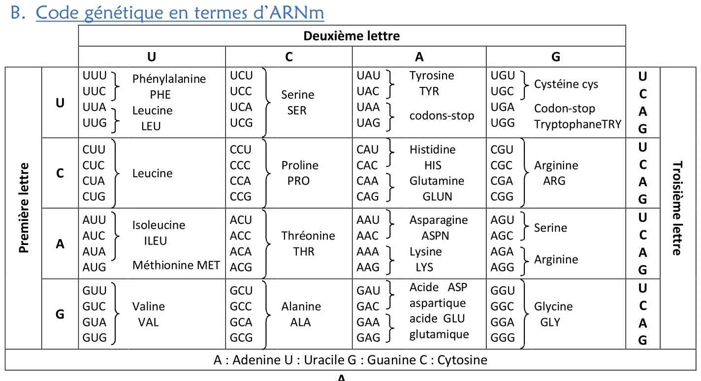
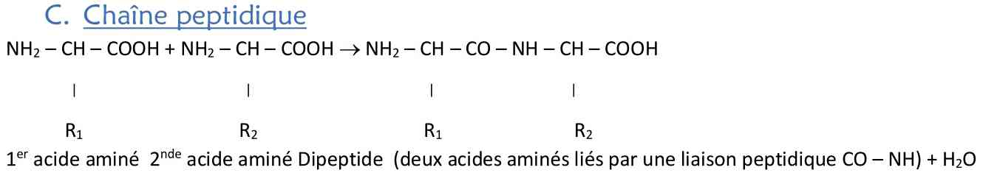

L’information génétique gouverne les caractères transmissibles d’une génération à l’autre. Dans la reproduction conforme, les descendants issus d’un seul parent sont génétiquement identiques entre eux et au parent : ils forment un clone cellulaire.
📌 Gène : unité d’information correspondant à un caractère héréditaire.
📌 Génome : ensemble des gènes d’un individu.
Chez les eucaryotes pluricellulaires, la transmission se fait par la cellule œuf (zygote), issue de la fusion d’un spermatozoïde et d’un ovule. L’expérience historique sur l’Acetabularia (algue unicellulaire géante) démontre que l’IG est contenue dans le noyau et influence les synthèses du cytoplasme.
- ✔ Procaryotes : ADN libre dans le cytoplasme (nucléoïde).
- ✔ Eucaryotes : ADN enfermé dans le noyau, associé à des histones.
Selon Watson & Crick (1953), l’ADN est une double hélice formée de deux chaînes de nucléotides complémentaires.
- Acide phosphorique + Désoxyribose + Base azotée (A, T, G, C).
- Appariements spécifiques : A = T (2 liaisons hydrogène) et G ≡ C (3 liaisons).
Deux propriétés fondamentales :
➜ Support d’information : séquence des nucléotides (code à 4 lettres).
➜ Auto‑réplication : reproduction semi‑conservative qui conserve la séquence.


La mitose est une division cellulaire aboutissant à deux cellules filles génétiquement identiques à la cellule mère (conservation du caryotype 2n).
- Prophase : condensation de la chromatine en chromosomes à deux chromatides, disparition de l’enveloppe nucléaire, formation du fuseau.
- Métaphase : alignement des chromosomes sur la plaque équatoriale.
- Anaphase : séparation des chromatides vers les pôles.
- Télophase : décondensation, reconstitution des noyaux et division du cytoplasme (cytodiérèse).



Caryotype : nombre et morphologie des chromosomes d’une espèce. Exemple : Homme 2n = 46, Drosophile 2n = 8, Mais 2n = 20.
Interphase (G1 → S → G2) + Mitose (M). Phase S : réplication de l’ADN (quantité 2Q → 4Q). La durée totale varie selon les tissus.
Le phénotype dépend des protéines. Un gène → une protéine (ou polypeptide). Deux étapes majeures : transcription (ADN → ARNm) et traduction (ARNm → protéine).
L’ARNm est synthétisé à partir d’un brin d’ADN : complémentarité des bases (Uracile U remplace la Thymine T). L’enzyme ARN polymérase catalyse la réaction.
Le code génétique est universel, redondant, non ambigu. Un codon ( triplet de nucléotides sur l’ARNm) correspond à un acide aminé. Les ARN de transfert (ARNt) assurent l’adaptation codon/anticodon. Les ribosomes sont les sites de synthèse protéique.


Mécanisme de synthèse protéique : Initiation (codon AUG), Élongation (liaisons peptidiques) et Terminaison (codon stop UAA, UAG, UGA).


💡 À retenir : L’information génétique est portée par l’ADN, transmise par réplication semi‑conservative et exprimée en protéines via la transcription/traduction. La mitose assure la reproduction conforme et la stabilité du caryotype.